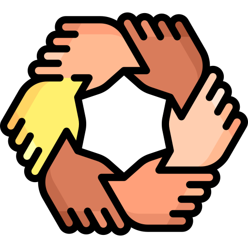

Current Projects
-
CoderSolidario
Junto a mi amigo y socio Pablo Roluti nos encontramos en las primeras fases de desarrollo de una app para que de manera sencilla una persona pueda publicar lo que necesita y asi otra que este registrada en CoderSolidario como VOLUNTARIO pueda ayudarla. De esta manera la app une a la persona que necesita con la que puede ayudar.
-
CoderMascotas

Junto a mi amigo y socio Pablo Roluti nos encontramos en las primeras fases de desarrollo de una app para que de manera sencilla una persona pueda publicar una mascota sin hogar para que otra que este registrada en CoderMascotas NUEVOHOGAR pueda adptarla. De esa manera la app une a la mascota con un nuevo dueño.